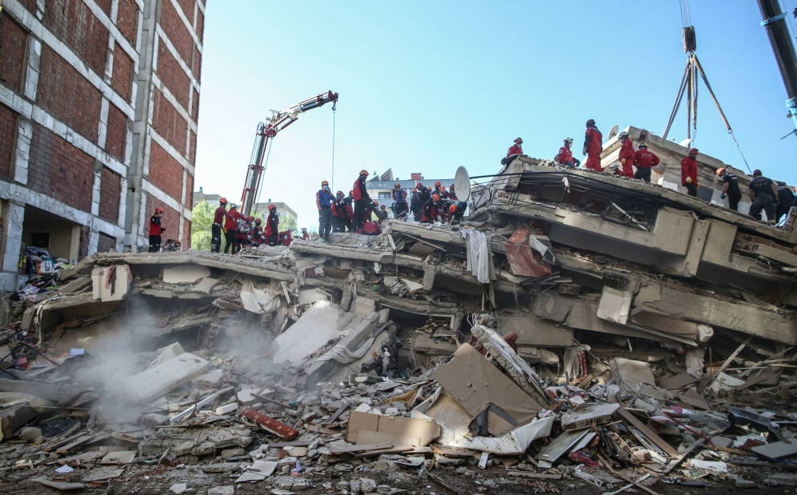

EL periódico de la Gente Enero del 2023
Terremotos de Turquía y Siria, última hora en directo Los servicios de emergencia turcos rescatan a más de 8.000 personas y siguen la búsqueda de supervivientes contra reloj Dos seísmos causan más de 5.000 muertos, según las autoridades, que temen que la cifra de víctimas mortales sea todavía mayor | Ankara registra más de 3.400 muertos y 20.000 heridos. En Siria, hay más de 1.600 fallecidos, contando aquellos en zonas bajo control del Gobierno y en territorios rebeldes | Un nuevo terremoto de magnitud 5,7 asola el este de Turquía
